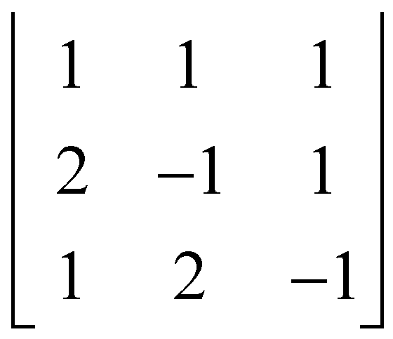

Ejemplo 1: Cálculo del Determinante del Sistema (\(\Delta s\))
Dado el sistema:
\( \begin{cases}
x + y + z = 6 \\
2x - y + z = 3 \\
x + 2y - z = 2
\end{cases} \)
Paso 1: Extraer los coeficientes de las variables (x, y, z).
\[ \Delta s = 1(1-2) - 1(-2-1) + 1(4 - (-1)) = -1 + 3 + 5 = 7 \]

Paso 2: Formar la matriz y resolver por regla de Sarrus o cofactores.\[ \Delta s = 1(1-2) - 1(-2-1) + 1(4 - (-1)) = -1 + 3 + 5 = 7 \]